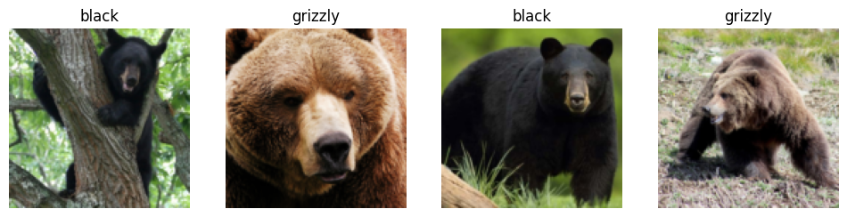
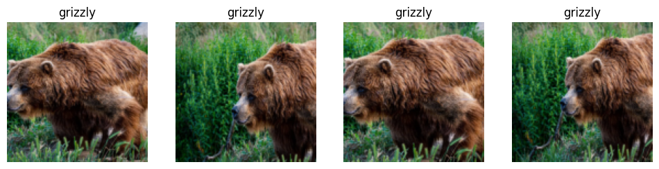
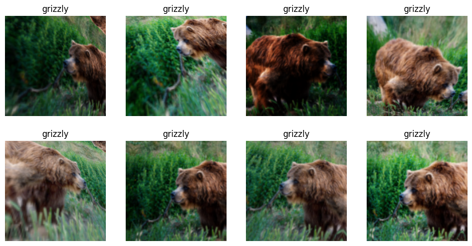
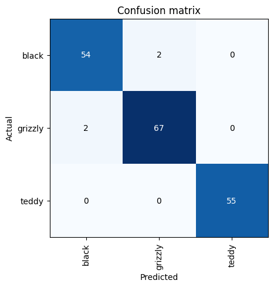
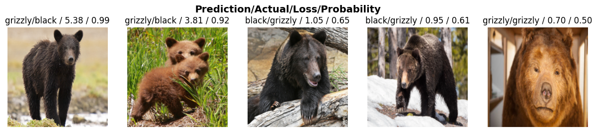
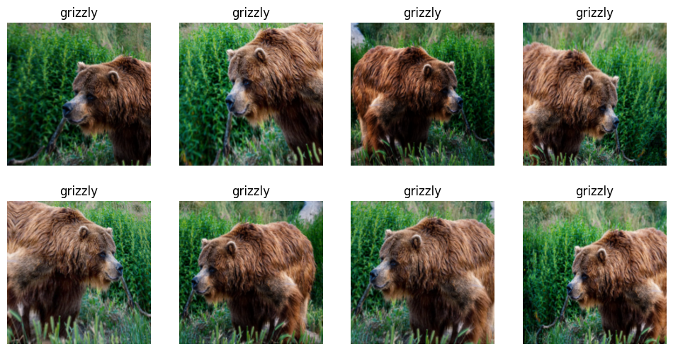

from duckduckgo_search import ddg_images
from typing import List, Dict, Any
from fastcore.all import *
from fastai.vision.widgets import *Actually using the model
imgs = ddg_images("shar pei", max_results=1)def search_images(term, max_images=30):
print(f"Searching for '{term}'")
return ddg_images(term, max_results=max_images)bear_types = ['grizzly','black','teddy']
path = Path('bears')from fastai.vision import utils as vutils
from fastai.data.transforms import get_image_files
IMG_LIMIT = 300
path.mkdir(exist_ok=True)
for o in bear_types:
dest = (path/o)
dest.mkdir(exist_ok=True)
fns = get_image_files(dest)
if len(fns) >= IMG_LIMIT:
continue
search_results = search_images(f'{o} bear', max_images=(IMG_LIMIT - len(fns)))
urls = [res["image"] for res in search_results]
imgs = vutils.download_images(dest, urls=urls)fns = get_image_files(path)from fastai.vision import utils as vutils
failed = vutils.verify_images(fns)
failed(#0) []failed.map(Path.unlink);from fastai.data import block, transforms
from fastai.vision.data import ImageBlock
from fastai.vision.learner import RandomSplitter, Resize
bears = block.DataBlock(
blocks=(ImageBlock, block.CategoryBlock),
get_items=get_image_files,
splitter=RandomSplitter(valid_pct=0.2, seed=42),
get_y=transforms.parent_label,
item_tfms=Resize(128))dls = bears.dataloaders(path)dls.valid.show_batch(max_n=4, nrows=1)
from fastai.vision.learner import Resize, RandomResizedCrop
bears = bears.new(item_tfms=RandomResizedCrop(128, min_scale=0.3))
dls = bears.dataloaders(path)
dls.train.show_batch(max_n=4, nrows=1, unique=True)
from fastai.vision.augment import aug_transforms
# Data Augmentation
bears = bears.new(item_tfms=Resize(128), batch_tfms=aug_transforms(mult=2))
dls = bears.dataloaders(path)
dls.train.show_batch(max_n=8, nrows=2, unique=True)
bears = bears.new(
item_tfms=RandomResizedCrop(224, min_scale=0.5),
batch_tfms=aug_transforms())
dls = bears.dataloaders(path)from fastai.vision.learner import vision_learner
from fastai.vision.all import resnet18, error_rate
learn = vision_learner(dls, resnet18, metrics=error_rate)
learn.fine_tune(4)/home/matt/.pyenv/versions/3.9.13/envs/jupyter/lib/python3.9/site-packages/torchvision/models/_utils.py:208: UserWarning: The parameter 'pretrained' is deprecated since 0.13 and will be removed in 0.15, please use 'weights' instead.
warnings.warn(
/home/matt/.pyenv/versions/3.9.13/envs/jupyter/lib/python3.9/site-packages/torchvision/models/_utils.py:223: UserWarning: Arguments other than a weight enum or `None` for 'weights' are deprecated since 0.13 and will be removed in 0.15. The current behavior is equivalent to passing `weights=ResNet18_Weights.IMAGENET1K_V1`. You can also use `weights=ResNet18_Weights.DEFAULT` to get the most up-to-date weights.
warnings.warn(msg)
Downloading: "https://download.pytorch.org/models/resnet18-f37072fd.pth" to /home/matt/.cache/torch/hub/checkpoints/resnet18-f37072fd.pth[W NNPACK.cpp:51] Could not initialize NNPACK! Reason: Unsupported hardware.| epoch | train_loss | valid_loss | error_rate | time |
|---|---|---|---|---|
| 0 | 0.895106 | 0.099489 | 0.038889 | 00:18 |
| epoch | train_loss | valid_loss | error_rate | time |
|---|---|---|---|---|
| 0 | 0.151300 | 0.076215 | 0.033333 | 00:17 |
| 1 | 0.116786 | 0.063916 | 0.022222 | 00:16 |
| 2 | 0.092991 | 0.066528 | 0.022222 | 00:16 |
| 3 | 0.075252 | 0.071187 | 0.022222 | 00:16 |
from fastai.interpret import ClassificationInterpretation
interp = ClassificationInterpretation.from_learner(learn)
interp.plot_confusion_matrix()
interp.plot_top_losses(5, nrows=1)
#hide_output
cleaner = ImageClassifierCleaner(learn)
cleaner# Clearing out invalid data.
for idx in cleaner.delete():
cleaner.fns[idx].unlink()
# For moving data from one folder to another
# This assumes you're using the folder names as categories
for idx, category in cleaner.change():
shutil.move(str(cleaner.fns[idx]), path / category)learn.export()# retrain
dls = bears.dataloaders(path)
dls.train.show_batch(max_n=8, nrows=2, unique=True)
learn = vision_learner(dls, resnet18, metrics=error_rate)
learn.fine_tune(4)/home/matt/.pyenv/versions/3.9.13/envs/jupyter/lib/python3.9/site-packages/torchvision/models/_utils.py:208: UserWarning: The parameter 'pretrained' is deprecated since 0.13 and will be removed in 0.15, please use 'weights' instead.
warnings.warn(
/home/matt/.pyenv/versions/3.9.13/envs/jupyter/lib/python3.9/site-packages/torchvision/models/_utils.py:223: UserWarning: Arguments other than a weight enum or `None` for 'weights' are deprecated since 0.13 and will be removed in 0.15. The current behavior is equivalent to passing `weights=ResNet18_Weights.IMAGENET1K_V1`. You can also use `weights=ResNet18_Weights.DEFAULT` to get the most up-to-date weights.
warnings.warn(msg)| epoch | train_loss | valid_loss | error_rate | time |
|---|---|---|---|---|
| 0 | 0.940698 | 0.065609 | 0.022222 | 00:15 |
| epoch | train_loss | valid_loss | error_rate | time |
|---|---|---|---|---|
| 0 | 0.108798 | 0.063448 | 0.022222 | 00:17 |
| 1 | 0.101021 | 0.082268 | 0.016667 | 00:16 |
| 2 | 0.096700 | 0.042520 | 0.016667 | 00:16 |
| 3 | 0.078842 | 0.039166 | 0.016667 | 00:17 |

learn.export()path = Path()
path.ls(file_exts='.pkl')(#1) [Path('export.pkl')]from fastai.learner import load_learner
learn_inf = load_learner(path/'export.pkl')learn_inf.predict('bears/black/feb76760-e1aa-4f53-aa74-ab72354023ff.jpg')
0.00% [0/1 00:00<?]
FileNotFoundError: [Errno 2] No such file or directory: 'bears/black/feb76760-e1aa-4f53-aa74-ab72354023ff.jpg'learn_inf.predict('bears/grizzly/79b20ad1-2f7e-4c00-baa0-c34c70365e46.jpg')learn_inf.dls.vocab